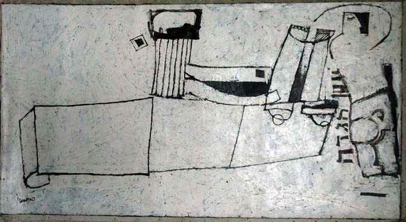
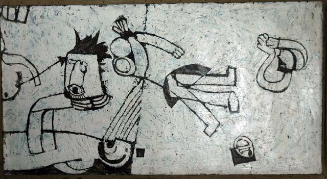

Série : "L'exode" / "Exodus"
Retour aux toilesTaille : 75 cm × 120 cm / Size: 30.5'' × 47''
Moïse et l'esprit guident le peuple / Moses and the Spirit Leading the People
La communauté avec l'esprit / The Community With Spirit

Les Lévi, gardiens du Temple, avec la Torah / Levis, Guardians of Temple, With Torah
Moïse parlant à Dieu / Moses Talking to God

La punition / The Punishment
L'adoration des faux dieux / Worshipping False Gods